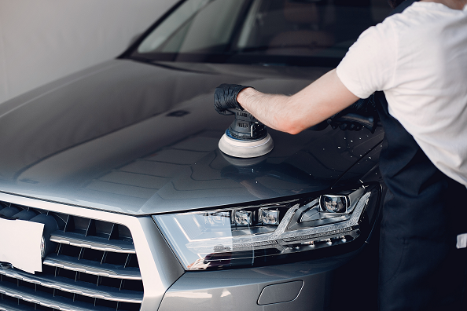
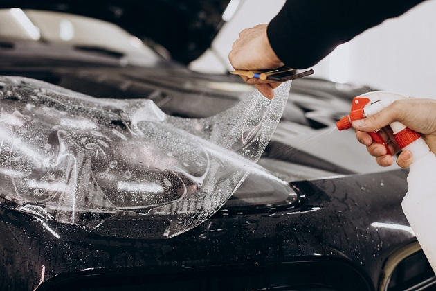
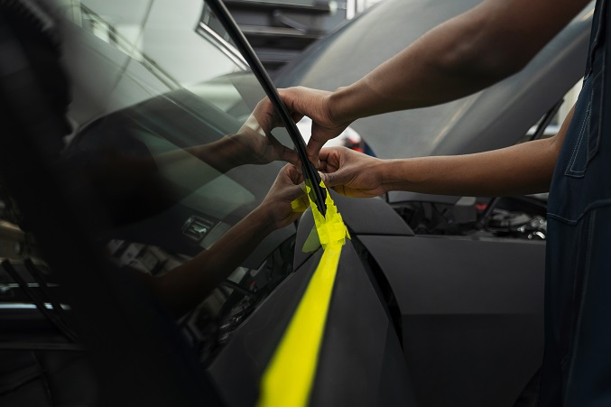
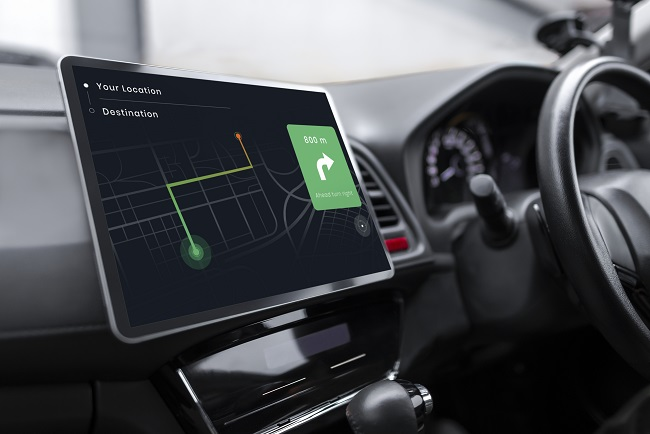

Jasa salon dan detailing mobil panggilan #1 di Indonesia
Jasa salon dan detailing mobil Car-Care kini hadir menawarkan solusi kepada anda yang memiliki mobil namun tidak memiliki banyak waktu untuk mendandani kendaraannya.
Start detailing Learn mode ↓
Jasa
Car-Care memberikan pelayanan terbaik untuk anda

One Day Service
-
One Step Polish -
Paint Protection -
Premium Wash -
Car Cleaning Service -
Wheels Detailing -
Remove waterspots -
Etc

Car Coating
-
Menjaga warna cat -
Bebas debu dan kotoran -
Menghilangkan baret halus -
Mencegah jamur pada kaca


Apply GPS tracker
-
Melacak posisi kendaraan -
Turn off mesin -
Batas kecepatan & wilayah